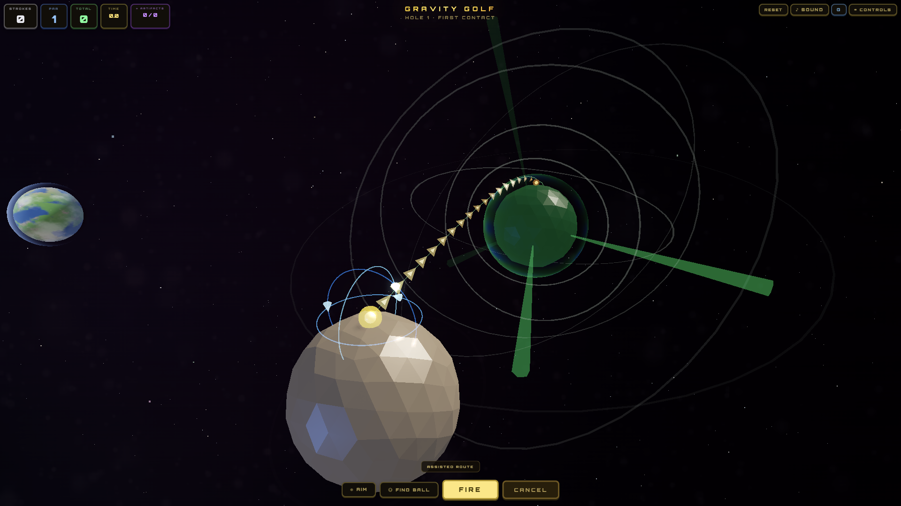
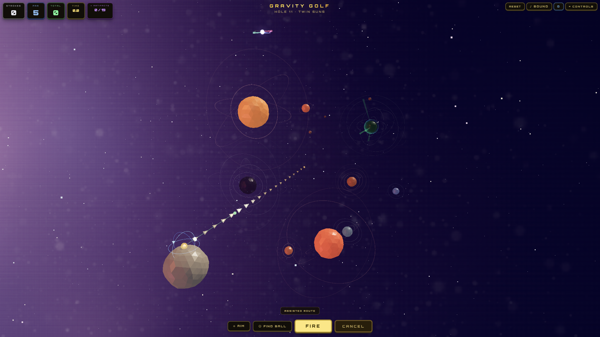
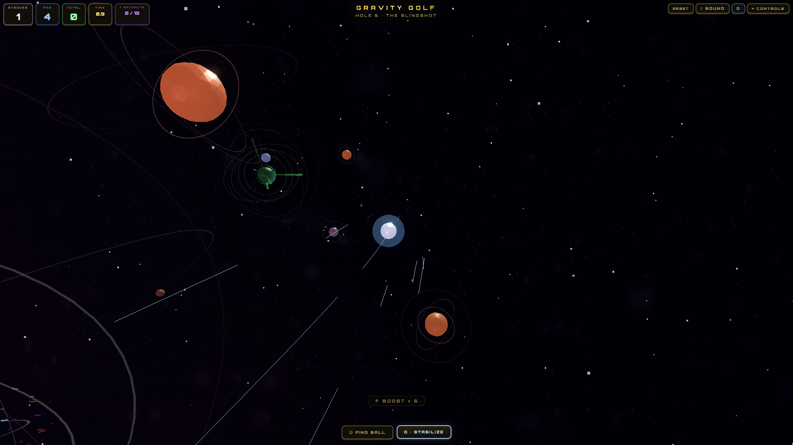
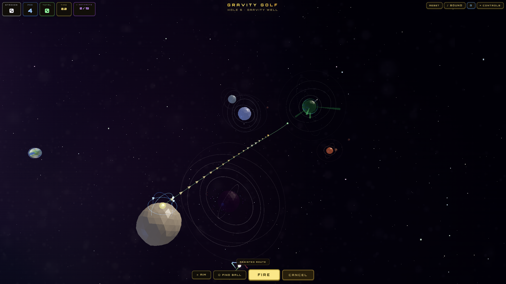
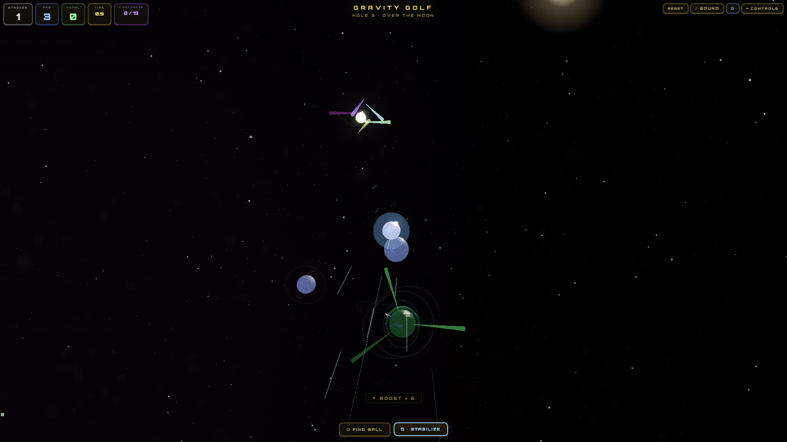

Private review / Steam + Epic / September 10, 2026
The fairway is an orbit.
Five screenshot candidates from the packaged Gravity Golf desktop prototype. Real gameplay, original HUD, 1920 × 1080 PNGs. Select an image to inspect the unretouched original.
Archived pre-fix capture
This gallery no longer matches the current prototype. Review revision 2 , captured after the wormhole-glow correction. Original PNGs and receipts below are preserved unchanged.
Not submitted or approved for release
These are prototype captures, not a public store page. Captions belong to this review only; they are not baked into the images. Built-in aim assistance was enabled. Final-build matching, rights review, Windows testing and owner approval remain required.

01 / Aim First Contact. The starting shot explains the core interaction without a separate marketing overlay.

02 / Course variety Twin Suns. A later authored course with a different arrangement of worlds and hazards.

03 / In flight The Slingshot. A real shot, with its ball trail and in-flight controls visible.

04 / Shot planning Gravity Well. The course, hazard and assisted route appear together.

05 / Small worlds Over the Moon. Another actual first shot. The live HUD records one stroke.
Review findings
Square colored backgrounds are visible around wormholes in the Hole 8 and Hole 10 diagnostic captures. They were excluded from this shortlist, not painted out. Fix and recapture those effects before using portal-focused promotional material.
All 21 source captures and their input/state receipts are preserved. Read the capture notes or inspect the shortlist manifest . No login, payment, upload, public listing or live-site change was performed.
Five genuine gameplay images and the 16:9, minimum 1920 × 1080 format follow the current Steam screenshot specification . Epic portal acceptance is still unverified.